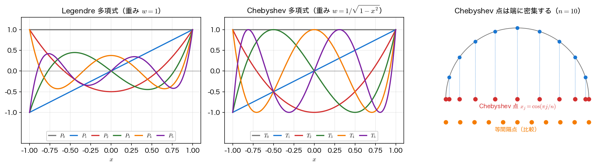
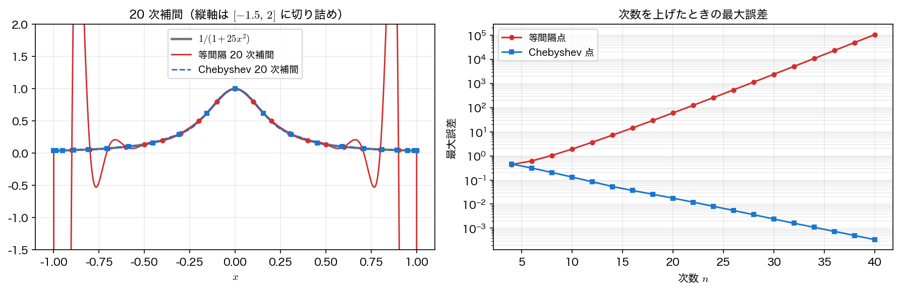

直交多項式と最良近似
フーリエ級数がうまくいったのは、\(\{1,\cos nx,\sin nx\}\) が互いに直交していたからである。直交していれば、展開係数は他の項と無関係に内積ひとつで決まり、切り詰めた和は最良近似になる。この構造は三角関数に固有のものではない。区間と重みを決めれば、そこに合った直交系 ── 直交多項式 ── が必ず作れる。
重み付き内積と直交多項式
区間 \([a,b]\) と 重み関数 \(w(x)\) を決め、実数値関数どうしの内積を
と定義する。\(\langle f,g\rangle_w=0\) のとき \(f\) と \(g\) は 直交する という。単項式の列 \(1,x,x^2,\dots\) にこの内積で Gram–Schmidt の直交化を施すと、次数がちょうど \(n\) の多項式の列 \(\{p_n\}\) が得られる。これが重み \(w\) に対する 直交多項式（orthogonal polynomials） である。
\(w\) に課す条件は二つある。\(w\ge0\) であって \(w=0\) となる点が区間のごく一部（測度 \(0\)）に限られること、そしてすべての \(n\) について積率 \(\int_a^b|x|^n w(x)\,dx\) が有限であることである。この二つが成り立てば、Gram–Schmidt の直交化をどの次数まででも続けることができ、直交多項式の列が定数倍を除いて一意に定まる。\(w\) が区間全体で有界である必要はない ── 次に出てくる Chebyshev の重み \(1/\sqrt{1-x^2}\) は端点で発散するが、積率は有限なのでこの枠にきちんと収まる。なお複素数値の関数まで扱いたいときは \(\langle f,g\rangle_w=\int_a^b f(x)\,\overline{g(x)}\,w(x)\,dx\) と一方に複素共役を付ける。
区間と重みの選び方で、よく使う直交多項式が出そろう。
| 名前 | 区間 | 重み \(w(x)\) | 用途 |
|---|---|---|---|
| Legendre \(P_n\) | \([-1,1]\) | \(1\) | 数値積分（Gauss 求積）、有限要素法 |
| Chebyshev \(T_n\) | \([-1,1]\) | \(1/\sqrt{1-x^2}\) | 補間、最良一様近似、スペクトル法 |
| Laguerre \(L_n\) | \([0,\infty)\) | \(e^{-x}\) | 減衰する信号、量子力学 |
| Hermite \(H_n\) | \((-\infty,\infty)\) | \(e^{-x^2}\) | 確率・統計、調和振動子 |
フーリエ級数も直交展開の一例
\([-\pi,\pi]\) で \(w=1\) とすれば、\(m,n\ge1\) に対して \(\langle\cos mx,\cos nx\rangle=\pi\delta_{mn}\)、\(\langle\cos mx,\sin nx\rangle=0\) となり、三角関数系もこの枠組みに入る（\(m=n=0\) のときだけは \(\langle1,1\rangle=2\pi\) で、フーリエ級数の定数項だけ規格化が違うのはこのためである）。「内積で直交する完全系を選び、その上に関数を射影する」 という骨格は共通で、違うのは系の選び方だけである。滑らかで周期的な関数には三角関数、有限区間で周期性のない関数には多項式が向く。
Legendre 多項式
もっとも基本的な \([-1,1]\)・\(w=1\) の場合が Legendre 多項式 である。直交関係は
で、\(P_n(1)=1\) と規格化する。具体形は \(P_0=1\)、\(P_1=x\)、\(P_2=\frac{1}{2}(3x^2-1)\)、\(P_3=\frac{1}{2}(5x^3-3x)\) と続く。計算に使うのは展開形ではなく 三項漸化式
で、\(P_{-1}=0,\ P_0=1\) から出発すれば任意の次数まで安定に求まる（Rodrigues の公式 \(P_n=\frac{1}{2^n n!}\frac{d^n}{dx^n}(x^2-1)^n\) からも同じものが得られるが、数値計算には漸化式を使う）。
まず直交性を数値で確かめる。積分には次ページで扱う Gauss–Legendre 求積を使う（\(12\) 点なら \(23\) 次まで厳密なので、\(5\) 次までの積は誤差なく計算できる）。
import numpy as np
import numpy.polynomial.legendre as leg
xq, wq = leg.leggauss(12) # 12 点なら 23 次まで厳密
P = np.array([leg.legval(xq, np.eye(6)[k]) for k in range(6)])
G = (P * wq) @ P.T # G[m,n] = ∫ P_m P_n dx
print("グラム行列 G（小数第 4 位まで）")
print(np.round(G, 4))
print("対角の理論値 2/(2n+1):", np.round(2 / (2*np.arange(6) + 1), 4))
print(f"対角の誤差 = {np.abs(np.diag(G) - 2/(2*np.arange(6)+1)).max():.2e}")
print(f"非対角の最大 = {np.abs(G - np.diag(np.diag(G))).max():.2e}")
グラム行列 G（小数第 4 位まで）
[[ 2. 0. -0. 0. 0. 0. ]
[ 0. 0.6667 0. -0. 0. 0. ]
[-0. -0. 0.4 0. 0. 0. ]
[ 0. -0. 0. 0.2857 -0. 0. ]
[ 0. -0. 0. -0. 0.2222 -0. ]
[ 0. 0. -0. 0. 0. 0.1818]]
対角の理論値 2/(2n+1): [2. 0.6667 0.4 0.2857 0.2222 0.1818]
対角の誤差 = 4.44e-16
非対角の最大 = 7.22e-16
グラム行列は対角行列で、対角成分は \(2/(2n+1)\) に一致する。表示に現れる -0. は、丸めの結果わずかに負になった \(10^{-16}\) 程度の成分であり、実質はゼロである。次に三項漸化式が正しく \(P_5\) を再現することを見る。
x = np.linspace(-1, 1, 5)
pm1, pn = np.zeros_like(x), np.ones_like(x) # P_{-1}=0, P_0=1
for n in range(5):
pm1, pn = pn, ((2*n + 1) * x * pn - n * pm1) / (n + 1)
print("P5（漸化式）:", np.round(pn, 6))
print("P5（legval）:", np.round(leg.legval(x, np.eye(6)[5]), 6))
print(f"差 = {np.abs(pn - leg.legval(x, np.eye(6)[5])).max():.2e}")

展開係数は直交射影である
直交系 \(\{p_n\}\) を使って関数 \(f\) を
と展開する。ここで \(f\) は \(\lVert f\rVert_w^2=\int_a^b f^2w\,dx<\infty\) を満たす関数（\(f\in L_w^2[a,b]\)）とする。この \(c_k\) は、\(f\) を「\(p_k\) の方向」に射影した成分にほかならない。\(p_0,\dots,p_M\) は次数がそれぞれ \(0,\dots,M\) なので \(M\) 次以下の多項式全体を張っており、フーリエ係数のときとまったく同じ計算で、\(M\) 次までで打ち切った和 \(S_M\) は
を満たす。すなわち 切り詰めた展開は、その次数で書ける多項式の中で \(L^2\) 誤差が最小 である。これが直交系を使う最大の理由である。ただし最小になるのは重み付き \(L^2\) 誤差であって、最大誤差（一様ノルム）ではないことに注意したい。
同じ次数の Taylor 展開と比べてみる。Taylor 展開が保証するのは「\(x=0\) で関数値と \(M\) 階までの導関数が一致し、局所誤差が \(O(x^{M+1})\) に収まる」ことだけで、区間全体の誤差を小さくするようには作られていない。
from math import factorial
xq, wq = leg.leggauss(200) # 展開係数と L2 誤差の計算用
Pk = [leg.legval(xq, np.eye(k+1)[k]) for k in range(6)]
c = np.array([(2*k + 1)/2 * np.sum(wq * np.exp(xq) * Pk[k]) for k in range(6)])
print("Legendre 係数 c_k:", " ".join(f"{v:.6f}" for v in c))
for M in (2, 3, 4, 5):
tay = np.array([1/factorial(k) for k in range(M + 1)])[::-1]
e_leg = np.sqrt(np.sum(wq * (leg.legval(xq, c[:M+1]) - np.exp(xq))**2))
e_tay = np.sqrt(np.sum(wq * (np.polyval(tay, xq) - np.exp(xq))**2))
print(f"{M} 次: L2 誤差 Legendre={e_leg:.3e} Taylor={e_tay:.3e}"
f" 比={e_tay/e_leg:.1f}")
Legendre 係数 c_k: 1.175201 1.103638 0.357814 0.070456 0.009965 0.001100
2 次: L2 誤差 Legendre=3.795e-02 Taylor=9.480e-02 比=2.5
3 次: L2 誤差 Legendre=4.721e-03 Taylor=2.051e-02 比=4.3
4 次: L2 誤差 Legendre=4.705e-04 Taylor=3.668e-03 比=7.8
5 次: L2 誤差 Legendre=3.911e-05 Taylor=5.581e-04 比=14.3
同じ次数でも Legendre 展開のほうが誤差が小さく、次数を上げるほど差が開く（\(5\) 次で \(14.3\) 倍）。係数 \(c_k\) が急速に小さくなっていることにも注目したい ── \(e^x\) は滑らかなので、少数の項で十分な精度が出る。この 係数の減衰の速さ が次ページの主題になる。
係数の減衰は関数の滑らかさを映す
直交展開の係数がどれだけ速く \(0\) に近づくかは、おおむね関数の滑らかさで決まる。\([-1,1]\) を囲む複素平面上の楕円（Bernstein 楕円）まで解析接続できる関数なら幾何級数的に減り（\(|c_k|=O(\rho^{-k})\)、\(\rho\) はその楕円の大きさで決まる定数）、\(e^x\) のような整関数ならさらに速い。逆に微分できない点があると代数的にしか減らない。ただし その代数的な指数は基底の選び方にも依る：\(|x|\) の展開係数は Legendre では \(k^{-3/2}\)、Chebyshev では \(k^{-2}\) で（数値回帰の傾きはそれぞれ \(-1.48\) と \(-2.00\)）、同じ関数でも減り方が違う。「滑らかなほど速く減る」は成り立つが、減衰の次数まで一つの式で言い当てられるわけではない。第2回で見た「不連続点があるとフーリエ係数が \(1/n\) でしか減らず Gibbs 現象が出る」のと、根は同じ事情である。
Chebyshev 多項式と Runge 現象
重みを \(w=1/\sqrt{1-x^2}\) に取ったものが Chebyshev 多項式 で、\(x=\cos\theta\) と置くと
という著しく簡単な形になる。ここから \(|T_n(x)|\le1\)、三項漸化式 \(T_{n+1}=2xT_n-T_{n-1}\)、そして零点
が直ちに読める。ただし補間や微分に実用上よく使われるのは、この零点ではなく Chebyshev–Gauss–Lobatto 点 \(x_j=\cos(\pi j/n)\)（\(j=0,\dots,n\)）のほうである。これは \(T_n(x_j)=(-1)^j\) を満たす \(T_n\) の 極値点 であって零点ではなく、両端 \(\pm1\) を含むぶん境界条件を課しやすいという利点がある。零点も極値点も「半円上の等間隔点を \(x\) 軸に落とした点」であることに変わりはなく、どちらも区間の端に密集する。以下で単に Chebyshev 点 と呼ぶのはこの Lobatto 点のことである。
ここで有名な失敗例を見る。Runge 関数 \(f(x)=1/(1+25x^2)\) は \([-1,1]\) で何度でも微分できる素直な関数だが、等間隔点で高次補間すると端で激しく振動して発散する。
from scipy.interpolate import BarycentricInterpolator
def runge(x):
return 1 / (1 + 25*x**2)
xf = np.linspace(-1, 1, 4001)
for n in (10, 20, 30):
xe = np.linspace(-1, 1, n + 1) # 等間隔点
xc = np.cos(np.pi * np.arange(n + 1) / n) # Chebyshev 点
ee = np.abs(BarycentricInterpolator(xe, runge(xe))(xf) - runge(xf)).max()
ec = np.abs(BarycentricInterpolator(xc, runge(xc))(xf) - runge(xf)).max()
print(f"n={n:2d}: 等間隔 最大誤差={ee:10.4f} Chebyshev 最大誤差={ec:.5f}")
n=10: 等間隔 最大誤差= 1.9156 Chebyshev 最大誤差=0.13220
n=20: 等間隔 最大誤差= 59.8223 Chebyshev 最大誤差=0.01774
n=30: 等間隔 最大誤差= 2387.9977 Chebyshev 最大誤差=0.00243
等間隔点では次数を上げるほど誤差が 増大 し、\(n=30\) では \(2388\) に達する（元の関数の最大値は \(1\) である）。一方 Chebyshev 点では単調に減り、\(n=30\) で \(0.0024\) になる。同じ関数・同じ次数・同じ補間公式で、点の取り方だけがこの差を生んでいる。

理由は補間誤差の公式
にある。この式が使えるのは \(f\) が \(C^{n+1}\) 級のときで、\(\xi=\xi(x)\) は評価点 \(x\) と全節点を含む最小の区間内のどこかの点である（\(x\) ごとに違う点であり、具体的にどこかは分からない）。
右辺のうち節点の取り方で動かせるのは、節点多項式 \(\omega(x)\) だけである。\(n+1\) 点で \(\lVert\omega\rVert_\infty\) を 厳密に最小 にするのは \(T_{n+1}\) の零点で、そのとき \(\lVert\omega\rVert_\infty=2^{-n}\) になる。ここで使う Chebyshev–Gauss–Lobatto 点はその \(2\) 倍（\(n=20\) で \(1.90\times10^{-6}\) 対 \(9.54\times10^{-7}\)）とほぼ最小であり、両端を含むぶん扱いやすい。等間隔点はこれより \(2\) 桁大きい（\(n=20\) で \(2.34\times10^{-4}\)）。
ただし等間隔点でも \(\lVert\omega\rVert_\infty\) 自体は次数とともに 減っていく（\(n=5\) で \(6.9\times10^{-2}\)、\(n=30\) で \(8.1\times10^{-6}\)）。Runge 現象が起きるのは \(\omega\) が大きいからだけではない。Runge 関数は \(x=\pm i/5\) に極をもつので \(f^{(n+1)}(\xi)/(n+1)!\) が \(\lVert\omega\rVert_\infty\) の減少を上回る速さで増大し、しかも等間隔点では \(|\omega|\) の大きさが端の区間に強く偏っている ── この二つが重なって、端での誤差だけが発散する。
等間隔点で高次補間をしてはいけない
「データ点を増やして次数を上げれば精度が上がる」は、等間隔点では 偽 である。測定データが等間隔にしか手に入らない場合は、高次の多項式で一気に通そうとせず、低次の区分多項式（スプライン） を使うか、最小二乗で低次多項式に当てはめる のが正しい。全体を高次多項式で表したいときは、最初から Chebyshev 点で標本化する（実験計画の段階で決められるなら、この選択は大きな利益になる）。
まとめ
- 区間と重み \(w\) を決めて内積 \(\langle f,g\rangle_w=\int f g\,w\,dx\) を入れると、直交多項式 の列が定まる。\([-1,1]\) で \(w=1\) なら Legendre、\(w=1/\sqrt{1-x^2}\) なら Chebyshev である。
- Legendre 多項式は \(\int P_mP_n\,dx=\frac{2}{2n+1}\delta_{mn}\) を満たし（数値で非対角 \(10^{-16}\) を確認）、三項漸化式 で安定に計算できる。
- 展開係数 \(c_k=\langle f,p_k\rangle_w/\lVert p_k\rVert_w^2\) は 直交射影 であり、切り詰めた和はその次数での \(L^2\) 最良近似 になる。\(e^x\) では同次数の Taylor 展開より誤差が小さく、\(5\) 次で \(14.3\) 倍の差がついた。
- 係数の減衰の速さは 関数の滑らかさ で決まる。フーリエ級数の Gibbs 現象と同じ構造である。
- 等間隔点の高次補間は Runge 現象 で破綻する（\(n=30\) で最大誤差 \(2388\)）。Chebyshev 点 に取り替えるだけで \(0.0024\) まで下がる。
次は、この直交多項式が定める節点 ── Gauss 点（\(P_n\) の零点）と Chebyshev–Gauss–Lobatto 点（\(T_N\) の極値点）── を数値積分と微分方程式に応用する Gauss 求積とスペクトル法 に進む。